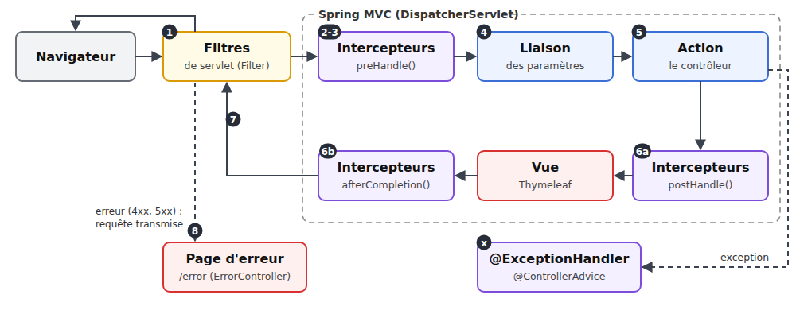
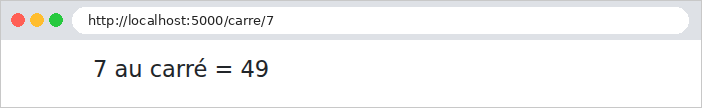
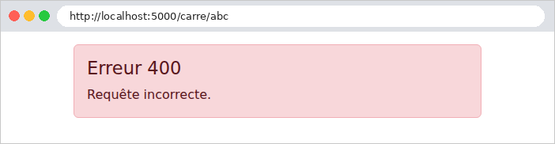
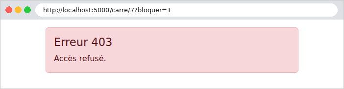
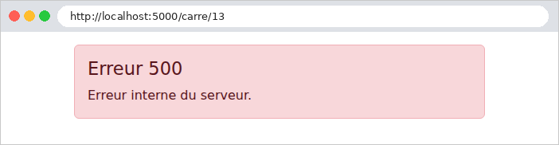

7. Le cycle de vie d'une requête
Entre l'arrivée d'une requête et l'exécution de l'action, plusieurs types d'objets interviennent, chacun avec un rôle précis. Nous en avons déjà rencontré : le gestionnaire des fichiers statiques, le [LocaleResolver] (chapitre 5), le filtre de l'exemple 23, les résolveurs d'arguments ([HandlerMethodArgumentResolver], exemple 12), le [@ControllerAdvice] (exemple 15). Il est temps de les situer les uns par rapport aux autres.
Deux étages se superposent. Le premier est celui du serveur ([Tomcat]) et de la norme Servlet de [Java] : une servlet est un objet qui traite des requêtes HTTP, et des filtres de servlet peuvent l'envelopper, pour agir avant et après elle. Le second étage est [Spring MVC] lui-même, qui n'est qu'une servlet, la [DispatcherServlet] : c'est elle qui choisit l'action, lie ses paramètres, l'exécute, puis produit la vue. À l'intérieur, des intercepteurs peuvent agir avant et après l'action. Là où [ASP.NET Core] a des middlewares et des filtres MVC, [Spring] a donc des filtres de servlet et des intercepteurs. L'étude de cas utilise la plupart de ces objets :

Objet | Rôle | Dans l'étude de cas |
filtre de servlet | préparer la requête ; ne connaît pas l'action | les filtres de [Spring Security] : lecture du jeton, accès refusé sans connexion |
intercepteur | du code avant et après l'action ; connaît l'action | (non utilisé : les rôles sont vérifiés par [@PreAuthorize], cf. chapitre 8, et [ModeleCommun] complète le modèle) |
résolveur d'argument | fournir la valeur d'un paramètre de l'action | ceux de [Spring MVC] : formulaires, validation, [BindingResult] |
[@ExceptionHandler] | transformer une exception en réponse | session invalide : retour à la page de connexion |
page d'erreur [/error] | fabriquer la page d'une réponse d'erreur | [ErreurController] : pages 400, 403, 404, 500 |
7.1. Exemple 24 : les étapes du traitement d'une requête
L'exemple 24 a une action, qui calcule le carré d'un nombre, et un objet de chaque type. Chacun écrit une ligne dans la console : on voit ainsi dans quel ordre ils interviennent. Les numéros écrits sont ceux du schéma.
| 24-cycle-de-vie/
├── src/main/java/exemple24/
│ ├── config/
│ │ └── WebConfig.java
│ ├── controllers/
│ │ ├── CalculController.java
│ │ └── ErreurController.java
│ ├── filtres/
│ │ ├── Bloquer.java
│ │ ├── BloquerInterceptor.java
│ │ ├── Chrono.java
│ │ ├── ChronoInterceptor.java
│ │ ├── Entier.java
│ │ ├── EntierResolver.java
│ │ ├── JournalFilter.java
│ │ └── PageErreurAdvice.java
│ └── Exemple24Application.java
├── src/main/resources/
│ ├── templates/
│ │ ├── calcul/
│ │ │ └── resultat.html
│ │ ├── erreur.html
│ │ └── layout.html
│ └── application.properties
└── pom.xml
|
Les fichiers [pom.xml], [application.properties] et [Exemple24Application.java] sont ceux des exemples précédents.
7.1.1. Le filtre de servlet
Le fichier [filtres/JournalFilter.java] :
| package exemple24.filtres;
import java.io.IOException;
import org.springframework.stereotype.Component;
import org.springframework.web.filter.OncePerRequestFilter;
import jakarta.servlet.FilterChain;
import jakarta.servlet.ServletException;
import jakarta.servlet.http.HttpServletRequest;
import jakarta.servlet.http.HttpServletResponse;
// un FILTRE de servlet : il voit passer chaque requête AVANT Spring MVC, et la
// réponse APRÈS. @Component : Spring Boot l'ajoute à la chaîne des filtres.
@Component
public class JournalFilter extends OncePerRequestFilter {
@Override
protected void doFilterInternal(HttpServletRequest request, HttpServletResponse response, FilterChain suite)
throws ServletException, IOException {
String requete = request.getMethod() + " " + request.getRequestURI()
+ (request.getQueryString() == null ? "" : "?" + request.getQueryString());
System.out.println();
System.out.println("--- " + requete);
System.out.println("1. filtre (avant)");
suite.doFilter(request, response); // toute la suite : Spring MVC, action, vue
System.out.println("7. filtre (après : code " + response.getStatus() + ")");
}
}
|
- lignes 15-16 : un filtre, comme celui de l'exemple 23. [OncePerRequestFilter] est une classe de [Spring] qui implémente l'interface [Filter] de la norme Servlet, en garantissant une seule exécution par requête ; on redéfinit sa méthode [doFilterInternal], appelée pour chaque requête. Avec [@Component], [Spring Boot] ajoute le filtre à la chaîne des filtres du serveur ;
- lignes 21-22 : la méthode, le chemin et les paramètres de la requête. Le filtre ne sait rien de l'action qui va la traiter : il intervient avant [Spring MVC], qui ne l'a pas encore choisie ;
- ligne 26 : le filtre passe la requête à la suite de la chaîne (les autres filtres, puis la [DispatcherServlet]), et attend qu'elle ait fini. S'il ne l'appelait pas, la requête s'arrêterait là (il devrait alors fabriquer lui-même la réponse). Le code placé avant cet appel s'exécute à l'aller, celui placé après, au retour : le filtre « enveloppe » tout le reste ;
- ligne 27 : au retour, le filtre voit le code de statut de la réponse.
7.1.2. Les intercepteurs
Un intercepteur est posé sur toutes les actions de l'application (cf. [WebConfig] plus loin). Pour qu'il n'agisse que sur certaines, on marque celles-ci d'une annotation à nous, que l'intercepteur cherchera. Le fichier [filtres/Bloquer.java] :
| package exemple24.filtres;
import java.lang.annotation.ElementType;
import java.lang.annotation.Retention;
import java.lang.annotation.RetentionPolicy;
import java.lang.annotation.Target;
// une annotation qui marque un contrôleur ; BloquerInterceptor la cherche
@Target(ElementType.TYPE)
@Retention(RetentionPolicy.RUNTIME)
public @interface Bloquer {
}
|
- ligne 11 : [@interface] déclare une annotation. Celle-ci n'a aucun paramètre : sa seule présence compte ;
- ligne 9 : [@Target] dit où l'annotation peut être posée : ici, sur un type (une classe) ;
- ligne 10 : [@Retention(RetentionPolicy.RUNTIME)] : l'annotation est conservée dans le code compilé, et lisible pendant l'exécution. Sans cela, le compilateur l'effacerait, et l'intercepteur ne la trouverait pas.
Le fichier [filtres/Chrono.java] est identique, au nom près. Le fichier [filtres/BloquerInterceptor.java] :
| package exemple24.filtres;
import org.springframework.web.method.HandlerMethod;
import org.springframework.web.servlet.HandlerInterceptor;
import jakarta.servlet.http.HttpServletRequest;
import jakarta.servlet.http.HttpServletResponse;
// un INTERCEPTEUR : il s'exécute dans Spring MVC, une fois l'action choisie.
// Celui-ci décide si l'action peut être exécutée.
public class BloquerInterceptor implements HandlerInterceptor {
// preHandle : avant l'action ; rendre false arrête là le traitement
@Override
public boolean preHandle(HttpServletRequest request, HttpServletResponse response, Object handler)
throws Exception {
// handler : ce qui va traiter la requête ; pour une action, une HandlerMethod.
// Contrairement au filtre, l'intercepteur connaît donc l'action visée.
if (handler instanceof HandlerMethod action && action.getBeanType().isAnnotationPresent(Bloquer.class)) {
System.out.println("2. intercepteur Bloquer (action visée : " + action.getMethod().getName() + ")");
if (request.getParameter("bloquer") != null) {
// une réponse d'erreur 403 (accès refusé), sans rien d'autre
response.sendError(HttpServletResponse.SC_FORBIDDEN);
return false; // ni liaison, ni action
}
}
return true;
}
}
|
- ligne 11 : un intercepteur implémente l'interface [HandlerInterceptor] de [Spring MVC]. Ses trois méthodes, [preHandle], [postHandle] et [afterCompletion], ont une implémentation par défaut qui ne fait rien : on ne redéfinit que celles dont on a besoin ;
- ligne 15 : [preHandle] s'exécute avant l'action, et même avant la liaison de ses paramètres. Son paramètre [handler] est ce qui va traiter la requête : pour une action, un objet [HandlerMethod], qui décrit la méthode du contrôleur ;
- ligne 19 : contrairement au filtre, l'intercepteur connaît donc l'action visée. [handler instanceof HandlerMethod action] teste le type de l'objet et, s'il convient, le range dans la variable [action], du bon type. [getBeanType()] donne la classe du contrôleur ; [isAnnotationPresent(Bloquer.class)] dit si elle porte l'annotation [@Bloquer] ;
- lignes 21-25 : un intercepteur refuse la requête en rendant [false] : la suite (liaison, action, vue) n'est pas exécutée. Il doit alors fabriquer lui-même la réponse : ici, [sendError(403)] en fait une réponse d'erreur « accès refusé », dont le serveur fabriquera la page (nous verrons comment) ;
- ligne 27 : [true] : la requête continue.
Le fichier [filtres/ChronoInterceptor.java] :
| package exemple24.filtres;
import org.springframework.web.method.HandlerMethod;
import org.springframework.web.servlet.HandlerInterceptor;
import org.springframework.web.servlet.ModelAndView;
import jakarta.servlet.http.HttpServletRequest;
import jakarta.servlet.http.HttpServletResponse;
// un second intercepteur : il mesure la durée du traitement
public class ChronoInterceptor implements HandlerInterceptor {
private static final String CLE = "chrono";
private static boolean concerne(Object handler) {
return handler instanceof HandlerMethod action && action.getBeanType().isAnnotationPresent(Chrono.class);
}
// avant l'action (et avant la liaison de ses paramètres)
@Override
public boolean preHandle(HttpServletRequest request, HttpServletResponse response, Object handler) {
if (concerne(handler)) {
System.out.println("3. intercepteur Chrono (avant)");
// l'heure de départ, rangée dans un attribut de la requête (portée requête)
request.setAttribute(CLE, System.nanoTime());
}
return true;
}
// après l'action, AVANT la vue ; n'est pas appelée si l'action a levé une exception
@Override
public void postHandle(HttpServletRequest request, HttpServletResponse response, Object handler,
ModelAndView mav) {
if (concerne(handler)) {
System.out.println("6a. intercepteur Chrono (après l'action ; vue choisie : "
+ (mav == null ? null : mav.getViewName()) + ")");
}
}
// à la toute fin, APRÈS la vue ; toujours appelée, avec l'exception éventuelle
@Override
public void afterCompletion(HttpServletRequest request, HttpServletResponse response, Object handler,
Exception exception) {
if (concerne(handler) && request.getAttribute(CLE) instanceof Long debut) {
long ms = (System.nanoTime() - debut) / 1_000_000;
String issue = exception == null ? "" : ", exception " + exception.getClass().getSimpleName();
System.out.println("6b. intercepteur Chrono (fin, " + ms + " ms" + issue + ")");
}
}
}
|
- lignes 15-17 : l'intercepteur ne s'intéresse qu'aux actions des contrôleurs annotés [@Chrono] ;
- lignes 21-28 : avant l'action, on note l'heure de départ ([System.nanoTime()], en nanosecondes), rangée dans un attribut de la requête (portée requête, cf. chapitre 6) ;
- lignes 32-38 : [postHandle] s'exécute après l'action et avant la vue. Elle reçoit le [ModelAndView] produit par l'action (le nom de la vue et le modèle), et pourrait encore le modifier. Elle n'est pas appelée si l'action a levé une exception ;
- lignes 42-49 : [afterCompletion] s'exécute à la toute fin, après la vue, que tout se soit bien passé ou non : c'est le bon endroit pour libérer une ressource ou mesurer une durée. Son dernier paramètre est l'exception éventuelle. Ligne 44, [instanceof Long debut] teste et convertit la valeur de l'attribut en une seule fois.
7.1.3. La liaison des paramètres
Le fichier [filtres/Entier.java] :
| package exemple24.filtres;
import java.lang.annotation.ElementType;
import java.lang.annotation.Retention;
import java.lang.annotation.RetentionPolicy;
import java.lang.annotation.Target;
// un paramètre entier, lu dans le chemin par EntierResolver (cf. exemple 12)
@Target(ElementType.PARAMETER)
@Retention(RetentionPolicy.RUNTIME)
public @interface Entier {
}
|
Une annotation, qui se pose cette fois sur un paramètre (ligne 9). Le fichier [filtres/EntierResolver.java] :
| package exemple24.filtres;
import java.util.Map;
import org.springframework.core.MethodParameter;
import org.springframework.web.bind.support.WebDataBinderFactory;
import org.springframework.web.context.request.NativeWebRequest;
import org.springframework.web.context.request.RequestAttributes;
import org.springframework.web.method.support.HandlerMethodArgumentResolver;
import org.springframework.web.method.support.ModelAndViewContainer;
import org.springframework.web.servlet.HandlerMapping;
// la liaison d'un paramètre @Entier Integer : la variable de chemin de même nom,
// convertie en entier, ou null si ce n'est pas un nombre entier
public class EntierResolver implements HandlerMethodArgumentResolver {
@Override
public boolean supportsParameter(MethodParameter parametre) {
return parametre.hasParameterAnnotation(Entier.class) && parametre.getParameterType() == Integer.class;
}
@Override
public Object resolveArgument(MethodParameter parametre, ModelAndViewContainer mavContainer,
NativeWebRequest requete, WebDataBinderFactory binderFactory) {
// les variables du chemin ({n}...), rangées par Spring dans un attribut de la requête
@SuppressWarnings("unchecked")
Map<String, String> variables = (Map<String, String>) requete.getAttribute(
HandlerMapping.URI_TEMPLATE_VARIABLES_ATTRIBUTE, RequestAttributes.SCOPE_REQUEST);
String valeur = variables == null ? null : variables.get(parametre.getParameterName());
System.out.println("4. liaison du paramètre (valeur reçue : \"" + valeur + "\")");
try {
return Integer.valueOf(valeur);
} catch (NumberFormatException e) {
return null; // c'est l'action qui décidera
}
}
}
|
Un résolveur d'argument, comme celui de l'exemple 12 :
- lignes 18-20 : il s'occupe des paramètres de type [Integer] annotés [@Entier] ;
- lignes 27-28 : [Spring MVC] a déjà analysé le chemin ([/carre/{n}]) au moment de choisir l'action ; il a rangé les variables du chemin dans un attribut de la requête, sous forme de dictionnaire [nom -> valeur] ;
- ligne 29 : la valeur de la variable qui porte le nom du paramètre ([n]) ;
- lignes 31-35 : la valeur convertie en entier, ou [null] si ce n'est pas un nombre entier. Une valeur invalide n'arrête rien : c'est l'action qui décide.
7.1.4. La gestion des exceptions
Le fichier [filtres/PageErreurAdvice.java] :
| package exemple24.filtres;
import org.springframework.http.HttpStatus;
import org.springframework.web.bind.annotation.ControllerAdvice;
import org.springframework.web.bind.annotation.ExceptionHandler;
import org.springframework.web.servlet.ModelAndView;
// @ControllerAdvice + @ExceptionHandler : transformer une exception, levée par
// n'importe quelle action, en réponse (ici, pour toute l'application)
@ControllerAdvice
public class PageErreurAdvice {
// les IllegalStateException seulement : les autres exceptions suivent leur chemin
@ExceptionHandler(IllegalStateException.class)
public ModelAndView erreur(IllegalStateException e) {
System.out.println("x. @ExceptionHandler (" + e.getClass().getSimpleName() + " : " + e.getMessage() + ")");
// au lieu de la page d'erreur par défaut, notre vue [erreur], avec le code 500
ModelAndView mav = new ModelAndView("erreur", HttpStatus.INTERNAL_SERVER_ERROR);
mav.addObject("code", 500);
return mav;
}
}
|
- ligne 10 : [@ControllerAdvice] fait de cette classe un complément de tous les contrôleurs (cf. exemple 15) ;
- lignes 14-15 : une méthode [@ExceptionHandler] est appelée quand une action lève une exception du type indiqué, ici [IllegalStateException] (ou d'un type dérivé). Posée dans un contrôleur, elle ne vaudrait que pour ses actions ; dans un [@ControllerAdvice], elle vaut pour toute l'application. Elle reçoit l'exception en paramètre, et produit la réponse comme le ferait une action ;
- lignes 18-20 : au lieu de la page d'erreur par défaut, la vue [erreur], avec le code 500. Un [ModelAndView] réunit ce qu'une action rend d'habitude en deux fois : le nom de la vue et le modèle (et ici le code de statut).
Les autres exceptions ne sont pas traitées ici : nous allons voir ce qu'elles deviennent.
7.1.5. La configuration
Le fichier [config/WebConfig.java] :
| package exemple24.config;
import java.util.List;
import org.springframework.context.annotation.Configuration;
import org.springframework.web.method.support.HandlerMethodArgumentResolver;
import org.springframework.web.servlet.config.annotation.InterceptorRegistry;
import org.springframework.web.servlet.config.annotation.ResourceHandlerRegistry;
import org.springframework.web.servlet.config.annotation.WebMvcConfigurer;
import exemple24.filtres.BloquerInterceptor;
import exemple24.filtres.ChronoInterceptor;
import exemple24.filtres.EntierResolver;
// la configuration de Spring MVC, complétée
@Configuration
public class WebConfig implements WebMvcConfigurer {
// Bootstrap, partagé par les exemples : le dossier exemples/commun/bootstrap
// est servi sous l'URL /bootstrap/...
@Override
public void addResourceHandlers(ResourceHandlerRegistry registry) {
registry.addResourceHandler("/bootstrap/**")
// "file:" : un dossier du disque, relatif au dossier courant. Deux
// essais : lancé depuis le dossier de l'exemple, ou depuis [exemples]
.addResourceLocations("file:../commun/bootstrap/", "file:commun/bootstrap/");
}
// les intercepteurs, exécutés dans l'ordre où ils sont ajoutés
@Override
public void addInterceptors(InterceptorRegistry registry) {
registry.addInterceptor(new BloquerInterceptor());
registry.addInterceptor(new ChronoInterceptor());
}
// la liaison des paramètres @Entier
@Override
public void addArgumentResolvers(List<HandlerMethodArgumentResolver> resolvers) {
resolvers.add(new EntierResolver());
}
}
|
- lignes 30-34 : les intercepteurs sont ajoutés à [Spring MVC], qui les exécute dans l'ordre où ils ont été ajoutés (et [postHandle], [afterCompletion] dans l'ordre inverse). Ils s'appliquent à toutes les actions ; on pourrait les limiter à certains chemins ([.addPathPatterns("/carre/**")]), mais nos annotations sont plus précises ;
- lignes 37-40 : le résolveur d'argument, comme à l'exemple 12.
7.1.6. Le contrôleur et la page d'erreur
Le fichier [controllers/CalculController.java] :
| package exemple24.controllers;
import org.springframework.http.HttpStatus;
import org.springframework.stereotype.Controller;
import org.springframework.ui.Model;
import org.springframework.web.bind.annotation.GetMapping;
import org.springframework.web.server.ResponseStatusException;
import exemple24.filtres.Bloquer;
import exemple24.filtres.Chrono;
import exemple24.filtres.Entier;
// deux annotations posées sur le contrôleur : les intercepteurs les cherchent
@Bloquer
@Chrono
@Controller
public class CalculController {
@GetMapping("/carre/{n}")
public String carre(@Entier Integer n, Model model) {
System.out.println("5. action carre(" + n + ")");
if (n == null) {
// une erreur 400 : cf. ErreurController
throw new ResponseStatusException(HttpStatus.BAD_REQUEST);
}
if (n == 13) {
throw new IllegalStateException("13 porte malheur"); // une erreur « imprévue »
}
model.addAttribute("n", n);
model.addAttribute("carre", n * n);
return "calcul/resultat";
}
}
|
- lignes 14-15 : les deux annotations que cherchent les intercepteurs ;
- ligne 20 : le paramètre [n], fourni par notre résolveur ;
- lignes 22-25 : un paramètre invalide : une erreur 400 (requête incorrecte). La [ResponseStatusException] (cf. exemple 21) est transformée par [Spring MVC] en réponse d'erreur, sans contenu ;
- lignes 26-28 : une erreur « imprévue », pour voir l'[@ExceptionHandler] à l'œuvre ;
- lignes 29-31 : le cas normal. Le fichier [templates/calcul/resultat.html] affiche le résultat :
| <!doctype html>
<html xmlns:th="http://www.thymeleaf.org" th:replace="~{layout :: page(~{::main})}">
<body>
<main>
<h1 class="h4" th:text="|${n} au carré = ${carre}|">7 au carré = 49</h1>
</main>
</body>
</html>
|
- ligne 2 : la page utilise le gabarit [templates/layout.html], sans surprise (cf. exemple 15) : un titre et [Bootstrap] ;
- ligne 5 : entre deux barres verticales, [|...|] est un texte dans lequel [Thymeleaf] remplace chaque [${...}] par sa valeur.
Reste la page d'erreur. Quand une requête se termine par une réponse d'erreur (un appel à [sendError], une [ResponseStatusException], une adresse inconnue, une exception que personne n'a traitée), le serveur ne renvoie pas une réponse vide : il transmet la requête à l'adresse [/error], pour fabriquer la page à renvoyer, et range au passage le code d'erreur dans un attribut de la requête. [Spring Boot] fournit déjà une action pour cette adresse : c'est elle qui a produit jusqu'ici les réponses d'erreur JSON (pour [curl]) et la page « Whitelabel Error Page » (pour un navigateur). Le fichier [controllers/ErreurController.java] la remplace :
| package exemple24.controllers;
import org.springframework.boot.webmvc.error.ErrorController;
import org.springframework.stereotype.Controller;
import org.springframework.ui.Model;
import org.springframework.web.bind.annotation.RequestMapping;
import jakarta.servlet.RequestDispatcher;
import jakarta.servlet.http.HttpServletRequest;
import jakarta.servlet.http.HttpServletResponse;
// la page d'erreur de l'application. Une réponse d'erreur (sendError, exception
// non traitée) est transmise par le serveur à l'adresse /error ; implémenter
// ErrorController remplace la page d'erreur de Spring Boot par la nôtre.
@Controller
public class ErreurController implements ErrorController {
// @RequestMapping sans méthode HTTP : toutes les méthodes (GET, POST...)
@RequestMapping("/error")
public String erreur(HttpServletRequest request, HttpServletResponse response, Model model) {
// le code d'erreur d'origine, rangé par le serveur dans un attribut de la requête
Object code = request.getAttribute(RequestDispatcher.ERROR_STATUS_CODE);
int statut = code instanceof Integer c ? c : 500;
System.out.println("8. page d'erreur " + statut + " (requête transmise à /error)");
response.setStatus(statut); // la page garde le code d'erreur
model.addAttribute("code", statut);
return "erreur";
}
}
|
- lignes 15-16 : un contrôleur qui implémente l'interface [ErrorController] de [Spring Boot]. Cette interface n'a aucune méthode : elle sert de marque. Dès qu'un bean l'implémente, [Spring Boot] retire son propre contrôleur d'erreur ;
- ligne 19 : [@RequestMapping], sans méthode HTTP, accepte toutes les méthodes : une requête POST transmise à [/error] reste une requête POST ;
- lignes 22-23 : le code d'erreur d'origine, rangé par le serveur dans l'attribut [RequestDispatcher.ERROR_STATUS_CODE]. [code instanceof Integer c ? c : 500] : si l'attribut est un entier, sa valeur, 500 sinon (par exemple si l'on demande [/error] directement) ;
- lignes 25-27 : la page garde le code d'erreur, qui est passé à la vue.
Le fichier [templates/erreur.html] :
| <!doctype html>
<!--/* la page d'erreur ; son modèle : le code d'erreur */-->
<html xmlns:th="http://www.thymeleaf.org" th:replace="~{layout :: page(~{::main})}">
<body>
<main>
<div class="alert alert-danger">
<h1 class="h4" th:text="|Erreur ${code}|">Erreur 500</h1>
<!--/* th:switch / th:case : le premier cas égal à la valeur ; * : tous les autres */-->
<p class="mb-0" th:switch="${code}">
<span th:case="400">Requête incorrecte.</span>
<span th:case="403">Accès refusé.</span>
<span th:case="404">Page introuvable.</span>
<span th:case="*">Erreur interne du serveur.</span>
</p>
</div>
</main>
</body>
</html>
|
- lignes 9-14 : [th:switch] et [th:case] : seule est gardée la première balise [th:case] dont la valeur est égale à celle de [th:switch] ; [*] correspond à tout le reste. La vue sert à la fois à [ErreurController] et à [PageErreurAdvice].
7.1.7. Exécution
Cinq requêtes : un calcul normal (http://localhost:5000/carre/7), un paramètre invalide ([/carre/abc]), une requête bloquée par l'intercepteur ([/carre/7?bloquer=1]), l'erreur imprévue ([/carre/13]) et une adresse inconnue ([/inconnue]). La console du serveur :
| --- GET /carre/7
1. filtre (avant)
2. intercepteur Bloquer (action visée : carre)
3. intercepteur Chrono (avant)
4. liaison du paramètre (valeur reçue : "7")
5. action carre(7)
6a. intercepteur Chrono (après l'action ; vue choisie : calcul/resultat)
6b. intercepteur Chrono (fin, 5 ms)
7. filtre (après : code 200)
--- GET /carre/abc
1. filtre (avant)
2. intercepteur Bloquer (action visée : carre)
3. intercepteur Chrono (avant)
4. liaison du paramètre (valeur reçue : "abc")
5. action carre(null)
2026-09-25T18:48:16.146+02:00 WARN 23271 --- [nio-5000-exec-3] .w.s.m.a.ResponseStatusExceptionResolver : Resolved [org.springframework.web.server.ResponseStatusException: 400 BAD_REQUEST]
6b. intercepteur Chrono (fin, 1 ms)
7. filtre (après : code 400)
8. page d'erreur 400 (requête transmise à /error)
--- GET /carre/7?bloquer=1
1. filtre (avant)
2. intercepteur Bloquer (action visée : carre)
7. filtre (après : code 403)
8. page d'erreur 403 (requête transmise à /error)
--- GET /carre/13
1. filtre (avant)
2. intercepteur Bloquer (action visée : carre)
3. intercepteur Chrono (avant)
4. liaison du paramètre (valeur reçue : "13")
5. action carre(13)
x. @ExceptionHandler (IllegalStateException : 13 porte malheur)
2026-09-25T18:48:16.174+02:00 WARN 23271 --- [nio-5000-exec-5] .m.m.a.ExceptionHandlerExceptionResolver : Resolved [java.lang.IllegalStateException: 13 porte malheur]
6b. intercepteur Chrono (fin, 5 ms)
7. filtre (après : code 500)
--- GET /inconnue
1. filtre (avant)
7. filtre (après : code 404)
8. page d'erreur 404 (requête transmise à /error)
|
On lit dans ce journal :
- l'ordre des étapes du cas normal : le filtre, les intercepteurs ([preHandle]) dans l'ordre de leur ajout, la liaison du paramètre, l'action, [postHandle] (la vue n'est pas encore produite), [afterCompletion] (la vue est produite), et de nouveau le filtre, qui voit le code final de la réponse ;
- l'intercepteur qui refuse la requête ([/carre/7?bloquer=1]) court-circuite tout le reste de [Spring MVC] : pas de second intercepteur, pas de liaison, pas d'action ;
- un paramètre invalide n'empêche pas l'exécution de l'action : c'est elle qui décide ([carre(null)]), ici en levant une [ResponseStatusException]. [Spring MVC] confie toute exception levée par une action à une série de résolveurs d'exceptions ([HandlerExceptionResolver]) ; celui des [ResponseStatusException] la transforme en réponse d'erreur 400, et le signale dans le journal (ligne [WARN ... Resolved]). Comme l'action a levé une exception, [postHandle] n'est pas appelée ; [afterCompletion] l'est, sans exception : celle-ci a été traitée ;
- l'exception de [/carre/13] est traitée de la même façon, par le résolveur qui cherche les méthodes [@ExceptionHandler] (étape x). Celle-ci fabrique une page complète, avec le code 500 : la requête s'arrête là, sans passer par [/error] ;
- une réponse d'erreur sans contenu (400, 403, 404) est transformée en page par la transmission à [/error] (étape 8). Remarquons que cette étape vient après le retour dans le filtre (étape 7) : [sendError] ne fait que marquer la réponse comme une erreur, et c'est le serveur ([Tomcat]) qui, une fois la chaîne des filtres terminée, transmet la requête à [/error]. Cette seconde traversée ne repasse pas par notre filtre : [Spring Boot] inscrit bien le filtre pour les requêtes transmises à [/error], mais [OncePerRequestFilter] les laisse passer sans l'exécuter (c'est son comportement par défaut, que l'on pourrait changer en redéfinissant sa méthode [shouldNotFilterErrorDispatch]). Elle passe en revanche par les intercepteurs, puisque c'est [Spring MVC] qui exécute l'action [/error] ; mais [ErreurController] ne porte pas leurs annotations, et ils n'écrivent rien ;
- pour une adresse inconnue, aucune action ne correspond : [Spring MVC] confie alors la requête au gestionnaire des fichiers statiques (un [ResourceHttpRequestHandler]), qui ne trouve aucun fichier et lève une exception [NoResourceFoundException], transformée par un résolveur d'exceptions en réponse d'erreur 404 (sans ligne [WARN] dans le journal, cette fois). Les intercepteurs ont bien été appelés, mais le [handler] qu'ils ont reçu n'est pas une action ([HandlerMethod]) : ils n'ont rien écrit.
Les pages obtenues :




Vérifions que le code d'erreur est conservé :
| curl -i "http://localhost:5000/carre/7?bloquer=1"
|
| HTTP/1.1 403
Content-Type: text/html;charset=UTF-8
<!doctype html>
<html lang="fr">
<head>
<meta charset="utf-8">
<title>Cycle de vie</title>
<link rel="stylesheet" href="/bootstrap/css/bootstrap.min.css">
</head>
<body>
<div class="container py-3">
<main>
<div class="alert alert-danger">
<h1 class="h4">Erreur 403</h1>
<p class="mb-0">
<span>Accès refusé.</span>
</p>
</div>
</main>
</div>
</body>
</html>
|
Seul le [span] du cas retenu par [th:switch] figure dans la page.
L'étude de cas combine ces mécanismes : un contrôleur [ErreurController] pour les pages 400, 403, 404 et 500, vers lequel le serveur transmet toutes les réponses d'erreur, y compris celles des exceptions que personne n'a traitées (la page 500, sans la pile d'appels) ; et un [@ExceptionHandler] ([web/HtmlExceptionHandler.java]) pour un cas particulier : une session invalide (le compte a été supprimé depuis la connexion) n'affiche pas de page d'erreur mais redirige vers la page de connexion.